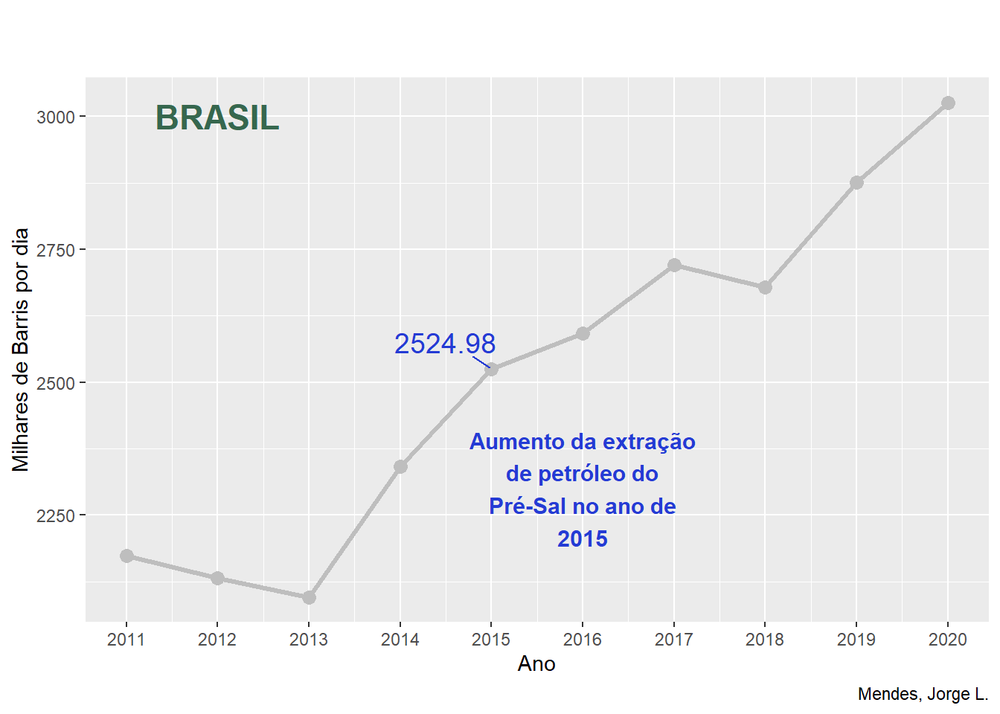

Atualizado1 : 23/03/2023
Introdução
O petróleo é um recurso extremamente necessário, presente em diversos setores da economia (indústria, agricultura, combustíveis, e etc).
[Link do Ícone](Barril de óleo ícones criados por mangsaabguru - Flaticon)
Objetivo
Analisar a produção de petróleo no Brasil. Para essa tarefa foram coletados dados da Agência Nacional do Petróleo (ANP). A proposta é gerar diversos tipos de visualização com a biblioteca ggplot.
Bibliotecas
O Tidyverse é um conjunto de bibliotecas muito útil que pode ser carregada rapidamente.

readr: Importar/Carregar dados;
dplyr(tidyr, tibble, plyr): Manipulação e transformação de dados;
ggplot: Visualização de dados;
magrittr: Operador Pipe(“O velho %>%”) facilita a escrita do código. Também existe o novo pipe (“|>”) nativo nas versões atuais do RStudio;
knitr: Ajuda a formatar tabelas.
Visão Geral
Quais países possuem as maiores reservas de petróleo?
Carregando os dados.
Reserva_internacional <- readr::read_csv2("https://www.gov.br/anp/pt-br/centrais-de-conteudo/publicacoes/anuario-estatistico/arquivos-anuario-estatistico-2021-metadados-pdf-e-dados-abertos-csv/secao-1-panorama-internacional/dados-abertos-csv/anuario-2021-dados_abertos-tabela1-1.csv")Plotando o Gráfico.
Reserva_internacional %>% filter(ANO ==2020) %>%
arrange(desc(`VALOR DA RESERVA`)) %>% slice(1:10) %>%
ggplot() +
geom_col(aes(x =`VALOR DA RESERVA`,y =reorder(PAÍS,`VALOR DA RESERVA`),
fill = BLOCO) ) +
scale_fill_manual(values = c("#de6d04","#0f7a38")) +
labs(x ="Bilhões de Barris", y = "",
title ="As 10 Maiores Reservas de Petróleo",
subtitle ="em 2020" ,
caption = "Mendes,Jorge L.") +
theme(plot.title = element_text(face = "bold"))A OPEP (Organização dos Países Exportadores de Petróleo) é uma organização que tem por objetivo regular a produção do petróleo para dar estabilidade no mercado internacionall.
Quem são maiores produtores?
Carregando os dados.
Producao_internacional <- readr::read_csv2("https://www.gov.br/anp/pt-br/centrais-de-conteudo/publicacoes/anuario-estatistico/arquivos-anuario-estatistico-2021-metadados-pdf-e-dados-abertos-csv/secao-1-panorama-internacional/dados-abertos-csv/anuario-2021-dados_abertos-tabela1-2.csv")
Producao_internacional$PRODUÇÃO <- round(Producao_internacional$PRODUÇÃO,2)Plotando o Gráfico adicionando labels.
Producao_internacional %>% filter(ANO == 2020) %>%
arrange(desc(PRODUÇÃO)) %>%
slice(1:10) %>%
mutate(label = glue::glue("{round(PRODUÇÃO/1000,2)}k")) %>%
ggplot() +
aes(x =PRODUÇÃO ,y =reorder(PAÍS,PRODUÇÃO),
fill=BLOCO, label =label) +
geom_col() +
scale_fill_manual(values = c("#de6d04","#0f7a38")) +
labs(x ="Milhares de Barris por Dia", y = "",
title = "Os 10 Maiores Produtores de Petróleo",
subtitle ="em 2020",
caption = "Mendes,Jorge L.") +
geom_label(size = 3) +
scale_x_continuous(limits = c(0,17000),
labels = function(x){
glue::glue("{x/1000}k")}) +
theme(plot.title = element_text(face = "bold"))Embora o Brasil não tenha as maiores reservas de petróleo, ele pertence ao grupo dos maiores produtores.
Agora podemos analizar a produção anual de petróleo do Brasil.
#Texto com quebra de linha
Texto <- paste(
strwrap("Aumento da extração de petróleo do Pré-Sal no ano de 2015",
20),
collapse = "\n")
ano_destacado <- Producao_internacional %>%
filter(ANO == 2015,PAÍS == "Brasil") %>%
mutate(label = glue::glue("{PRODUÇÃO}"))
Producao_internacional %>% filter(PAÍS =="Brasil") %>%
ggplot() +
aes(x = ANO,y=round(PRODUÇÃO,2)) +
geom_line(size =1.2,colour = "grey" ) +
scale_x_continuous(
breaks =c(2011:2020)) +
labs(y = "Milhares de Barris por dia",x ="Ano",
title = "",
subtitle = "",
caption = "Mendes, Jorge L.") +
geom_point(size = 3,
colour = "grey") +
#Textos
annotate("text",x = 2012 ,y =3000,size = 6,
label = "BRASIL", fontface = "bold",colour = "#36674e") +
annotate("text",x = 2016 ,y =2300,size= 4,
label = Texto, fontface = "bold",colour = "#243bd4") +
#destacar um ponto
ggrepel::geom_text_repel(
data = ano_destacado,
aes(x =ANO,y = PRODUÇÃO,label =label),
nudge_x = -0.5,
nudge_y = 50,
color = "#243bd4",
size = 5,
arrow = NULL
)Warning: Using `size` aesthetic for lines was deprecated in ggplot2 3.4.0.
ℹ Please use `linewidth` instead.
Quem foram os maiores consumidores em 2020?
Carregando os dados.
consumo_internacional <- readr::read_csv2("https://www.gov.br/anp/pt-br/centrais-de-conteudo/publicacoes/anuario-estatistico/arquivos-anuario-estatistico-2021-metadados-pdf-e-dados-abertos-csv/secao-1-panorama-internacional/dados-abertos-csv/anuario-2021-dados_abertos-tabela1-3.csv")Usando o pacote knitr para formatar tabelas.
consumo_internacional %>%
filter(ANO ==2020) %>% select(2:3) %>%
arrange(desc(`CONSUMO DE PETRÓLEO`)) %>% slice(1:10) %>%
head(10) %>%
knitr::kable(col.names = c("País","Consumo de Petróleo (mil barris por dia)"))| País | Consumo de Petróleo (mil barris por dia) |
|---|---|
| Estados Unidos | 17178 |
| China | 14225 |
| Índia | 4669 |
| Arábia Saudita | 3544 |
| Japão | 3268 |
| Rússia | 3238 |
| Coreia do Sul | 2560 |
| Brasil | 2323 |
| Canadá | 2282 |
| Alemanha | 2045 |
E no Brasil? Quais estados tem reserva de petróleo?
Carregando dados
Br_Reservas <- readr::read_csv2("https://www.gov.br/anp/pt-br/centrais-de-conteudo/publicacoes/anuario-estatistico/arquivos-anuario-estatistico-2021-metadados-pdf-e-dados-abertos-csv/secao-2-industria-nacional-do-petroleo-e-do-gas-natural/dados-abertos-csv/anuario-2021-dados_abertos-tabela2-3.csv")Aqui iremos somar as reservas marítimas e terrestres.
#Vamos agrupar total das reservas(terra e mar)
Total_estados <- Br_Reservas %>% filter(ANO == 2020) %>%
group_by(`UNIDADES DA FEDERAÇÃO`) %>%
dplyr::summarise(
sum(
Total =`RESERVAS TOTAIS DE PETRÓLEO (EM MILHÕES DE BARRIS)`),
Count= n()
) %>%
#renomeando as colunas
plyr::rename(replace =c("sum(Total = `RESERVAS TOTAIS DE PETRÓLEO (EM MILHÕES DE BARRIS)`)"="Total","UNIDADES DA FEDERAÇÃO" = "name_state"))
#Renomeando alguns itens
Total_estados$name_state[Total_estados$name_state =="Paraná5"] <- "Paraná"
Total_estados$name_state[Total_estados$name_state =="Rio de Janeiro3"] <- "Rio De Janeiro"
Total_estados$name_state[Total_estados$name_state =="Santa Catarina6"] <- "Santa Catarina"
Total_estados$name_state[Total_estados$name_state =="São Paulo4"] <- "São Paulo"
Total_estados$name_state[Total_estados$name_state =="Rio Grande do Norte"] <- "Rio Grande Do Norte"
#Formatando a tabela
Total <-Total_estados %>%
select(1:2) %>% kable(col.names = c("UF","Total"))
Total| UF | Total |
|---|---|
| Alagoas | 4.040435e+00 |
| Amazonas | 5.153600e+01 |
| Bahia | 2.938644e+02 |
| Ceará | 2.428873e-01 |
| Espírito Santo | 1.314880e+03 |
| Maranhão | 2.139806e-01 |
| Paraná | 0.000000e+00 |
| Rio Grande Do Norte | 2.662763e+02 |
| Rio De Janeiro | 1.603287e+04 |
| Santa Catarina | 0.000000e+00 |
| Sergipe | 1.947730e+02 |
| São Paulo | 2.079593e+03 |
Podemos apresentar os resultado na forma de mapa
A biblioteca geobr nos force uma malha de pontos que podemos usar para construir mapas.
Carregando os dados de 2017.
Mapa <-geobr::read_state(year = 2017)Agora podemos unir as tabelas
# um pequeno malabarismo para plotar o mapa completo
v1 <-c("Rio Grande Do Sul","Minas Gerais","Mato Grosso Do Sul",
"Mato Grosso","Goiás","Distrito Federal","Piauí","Paraíba",
"Pernambuco","Rondônia","Acre","Roraima","Pará","Amapá",
"Tocantins")
v2 <-rep(0,15)
# selecionar as colunas de interesse
Total_estados <- Total_estados %>% select(1:2)
#adicionando linhas ao dataframe
linhas <-data.frame(name_state =v1,Total = v2)
Total_estados <- rbind(Total_estados,linhas)
#Finalmente unindo as tabelas
Estados <- merge(Mapa, Total_estados, by = c("name_state"))Plotando o Gráfico.
Conclusão
A biblioteca ggplot é poderosa. Ela permite fazer vários tipos de edição no gráfico, gerando diversas visualizações com muita facilidade.
Referências
Footnotes
Troquei a paleta de cores e utilizei o pacote de glue para melhorar a vizualização.↩︎